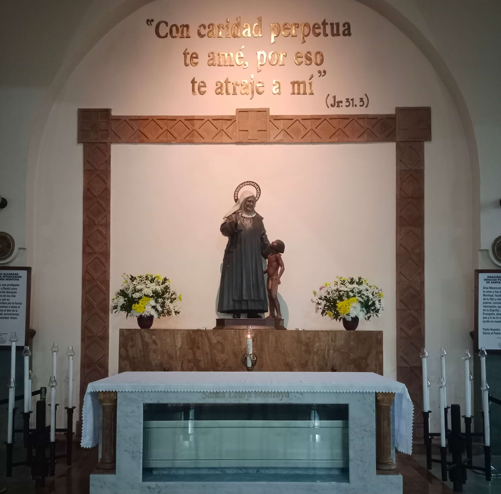
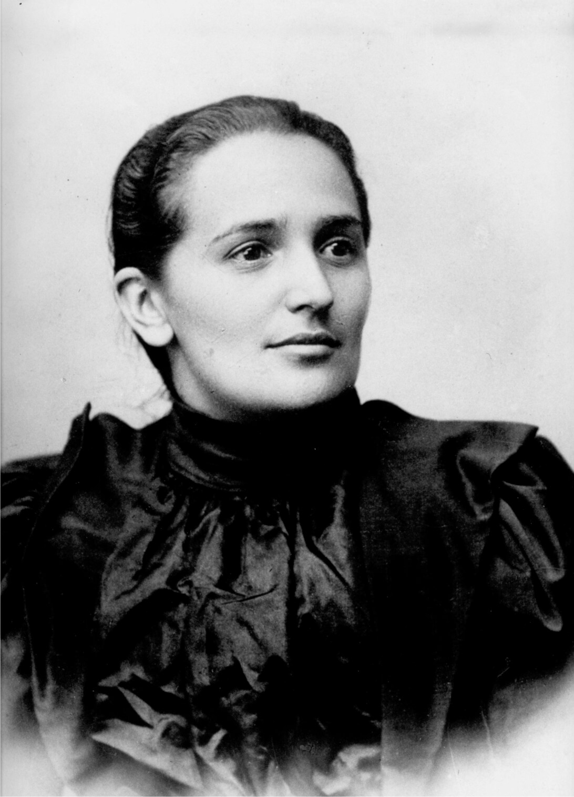
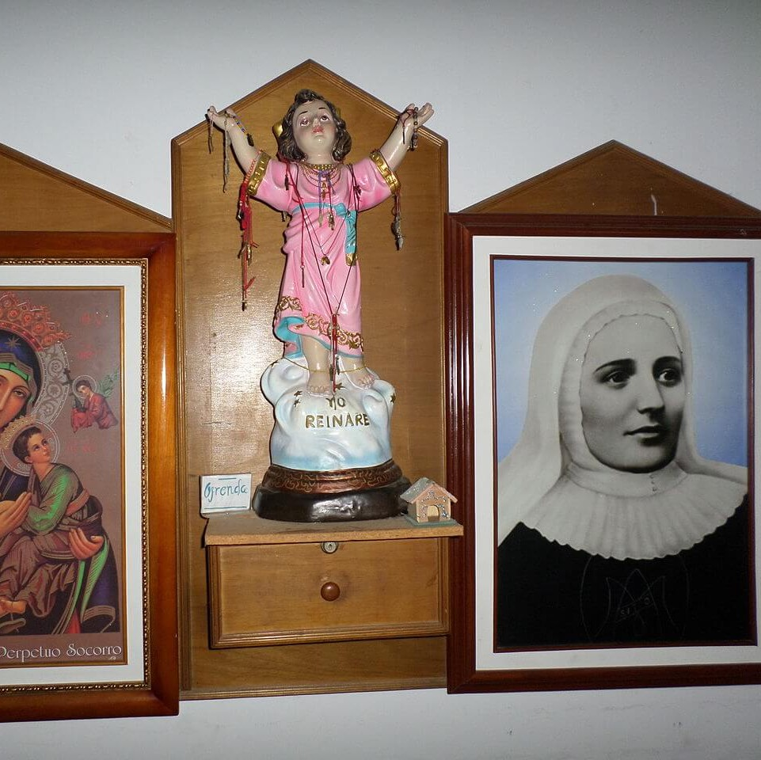
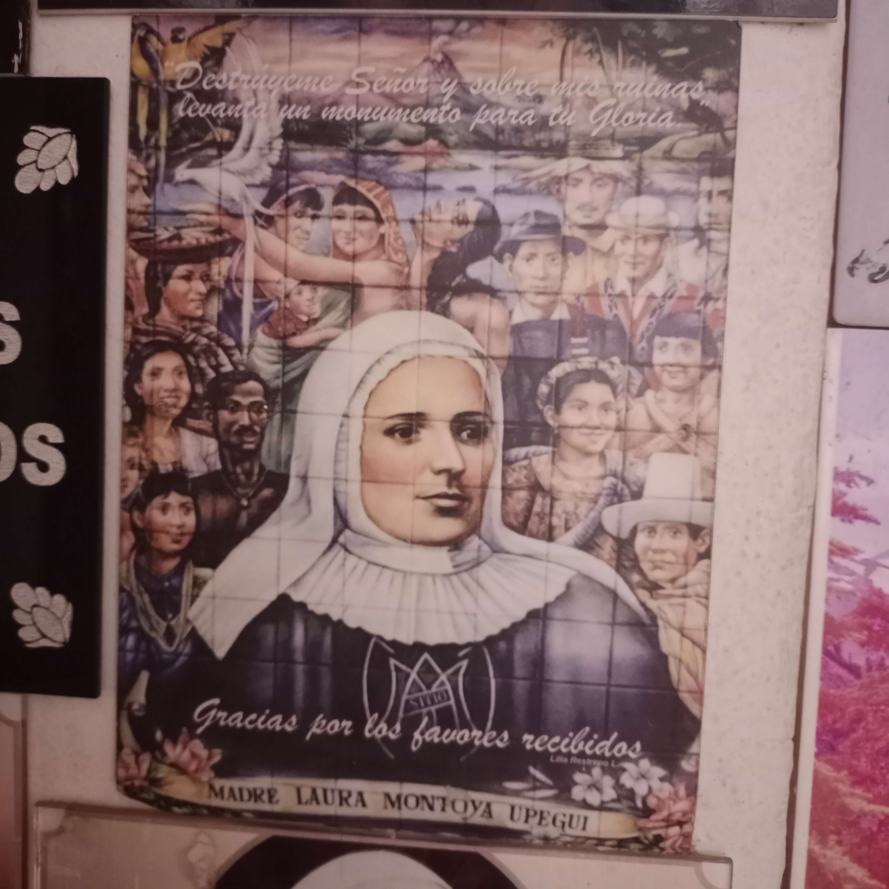
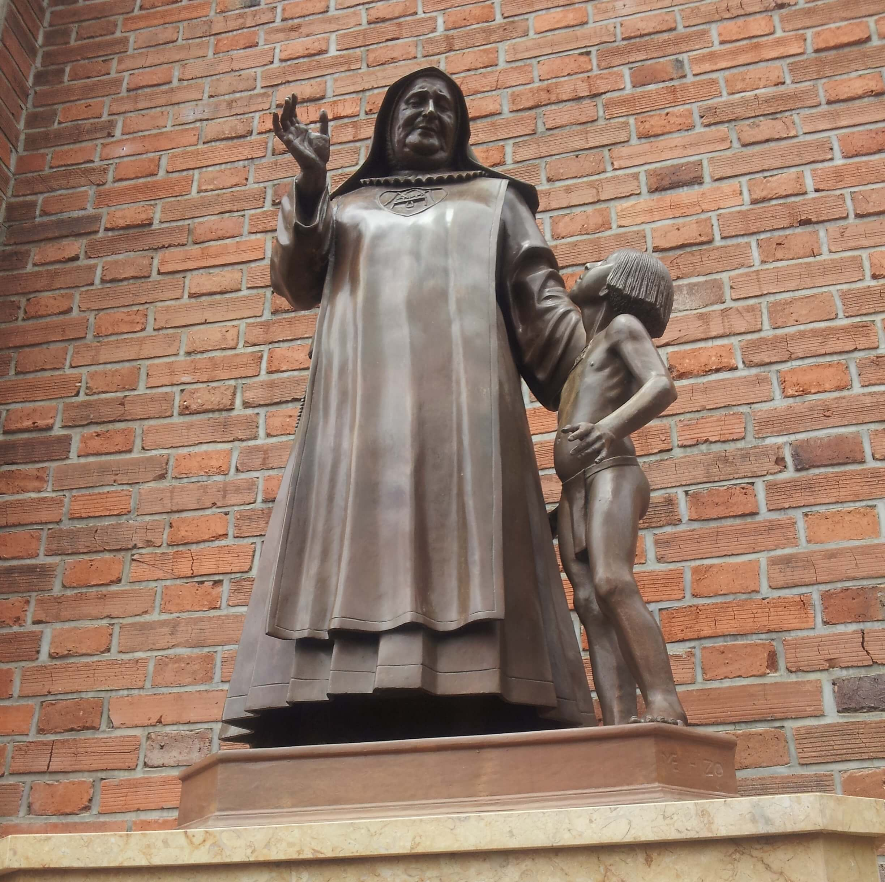

"Madre Laura" — Mãe dos Povos Indígenas da Colômbia
"Aos indígenas não falta alma — falta apenas quem os ame o suficiente para ir até eles."

María Laura de Jesús Montoya Upegui nasceu em 26 de maio de 1874 em Jericó, pequena cidade da região de Antioquia, no coração da Cordilheira dos Andes colombianos, filha de Juan de la Cruz Montoya — médico e comerciante — e de María Dolores Upegui. Foi batizada no mesmo dia do nascimento, como era costume da época.
Tinha apenas dois anos quando seu pai foi assassinado durante a guerra civil colombiana de 1876 — um dos muitos conflitos violentos que dilaceraram a Colômbia ao longo do século XIX entre liberais e conservadores. Juan de la Cruz morreu defendendo seus princípios religiosos e políticos, deixando a família na miséria e na viuvez repentina. Os bens foram confiscados pelos inimigos. Dolores ficou com três filhos pequenos — Carmelina, Juan de la Cruz e Laura — sem meios de sustento.
A infância de Laura foi marcada por uma solidão profunda e por uma série de deslocamentos forçados pela pobreza. Os avós, relutantes, a levaram para viver na fazenda deles perto de Amalfi — um ambiente que ela descrevia como pouco acolhedor. Ali, ainda criança, cuidou do avô até sua morte. Mais tarde foi enviada para Medellín, onde sua tia materna, a religiosa María de Jesús Upegui, a matriculou no Colégio do Espírito Santo — uma instituição frequentada por meninas de famílias abastadas, ambiente no qual a jovem Laura, pobre e simples, sentia-se profundamente deslocada e humilhada. Retirou-se ao fim do ano.
Essas experiências de solidão, rejeição e pobreza — que poderiam ter gerado amargura — moldaram ao contrário um coração extraordinariamente sensível ao sofrimento alheio. Laura aprendeu desde cedo o que significa ser excluída, não pertencer, ser olhada de cima. Essa experiência pessoal de marginalização seria o fundamento de toda a sua missão futura.
Por necessidade financeira, Laura formou-se professora — o único caminho disponível para uma mulher sem recursos que quisesse ter independência e ser útil. Lecionou em diversas escolas da região de Antioquia ao longo de mais de vinte anos, sendo reconhecida como professora dedicada e de métodos pedagógicos próprios.
Mas foi numa experiência missionária ainda como professora leiga que sua vocação verdadeira se revelou. Ao ser enviada para ensinar em regiões remotas de Antioquia — onde viviam comunidades indígenas que a sociedade colombiana da época considerava, na melhor das hipóteses, pessoas a serem "civilizadas", e na pior, seres sem alma e sem direitos —, Laura teve um choque espiritual transformador. Viu em cada rosto indígena não um ser inferior, mas um filho de Deus esquecido por todos. "Aos indígenas não falta alma — falta apenas quem os ame o suficiente para ir até eles", diria ela mais tarde.
Esse encontro com os povos indígenas foi para Laura o que o encontro com os pobres de Calcutá foi para Teresa de Calcutá: o momento em que tudo ficou claro, e a vocação deixou de ser uma vaga aspiração espiritual para se tornar uma missão concreta e urgente.
A ideia de fundar uma congregação dedicada exclusivamente à missão entre os povos indígenas foi recebida com ceticismo e resistência pelas autoridades eclesiásticas durante anos. Ninguém queria ir para a selva. Ninguém via sentido em dedicar uma congregação inteira a populações que a maioria considerava irrecuperáveis. Laura bateu de porta em porta — em conventos, em dioceses, em bispados — pedindo colaboradoras e aprovação, e ouvindo "não" com frequência.
Finalmente, em 14 de maio de 1914, Laura partiu de Medellín para Dabeiba, município de Antioquia, às margens do Rio Sucio, com cinco companheiras e com sua própria mãe, Dolores Upegui — que aos sessenta e tantos anos foi junto, como símbolo da fidelidade que sustentava toda a empresa. Ali, naquela cidade de fronteira entre o mundo "civilizado" e a selva, fundou a Congregação das Missionárias de Maria Imaculada e Santa Catarina de Siena — que viria a ser chamada popularmente de "Missionárias Lauritas", em sua homenagem.
O trabalho era duríssimo: selva fechada, doenças tropicais, desconfiança inicial das comunidades indígenas, resistência de colonos que não viam com bons olhos o trabalho das missionárias. Laura aprendeu línguas indígenas, adaptou sua catequese à cultura local, defendeu publicamente os direitos dos indígenas num tempo em que tal postura era considerada excêntrica ou subversiva. Recusou-se a "latinizar" seus missionados — ao contrário, buscava sempre evangelizar a partir de dentro da cultura, não contra ela.
Ao longo de décadas de missão na selva colombiana — percorrendo rios, trilhas de mato fechado, aldeias remotas sem qualquer estrutura —, Laura Montoya construiu uma rede de casas missionárias que chegou a 122 missões espalhadas pela Colômbia, Venezuela e Equador. Em cada uma, a mesma abordagem: presença, não imposição; amor, não coerção; aprendizado da língua e da cultura locais antes de qualquer pregação.
Francisco, ao canonizá-la em 2013, destacou exatamente esse aspecto: "Santa Laura foi instrumento de evangelização primeiro como mestra e depois como mãe espiritual dos indígenas, aos quais infundiu esperança, ensinando de uma maneira que respeitou a sua cultura." Esse modelo de missão inculturada, que hoje é considerado padrão pela Igreja, era na época de Laura uma posição de vanguarda — e foi defendida por ela décadas antes do Concílio Vaticano II consagrá-la.
Faleceu em 21 de outubro de 1949, em Medellín, aos setenta e cinco anos, com fama de santidade entre todos que a conheciam. Foi beatificada por João Paulo II em 25 de abril de 2004 e canonizada por Francisco em 12 de maio de 2013 — tornando-se a primeira santa da Colômbia e a padroeira dos órfãos e das vítimas de discriminação racial.
Laura Montoya viveu e morreu antes que o mundo ocidental desenvolvesse uma linguagem para o que ela praticava — direitos dos povos indígenas, respeito à diversidade cultural, missão inculturada, dignidade intrínseca de todo ser humano independente de etnia ou condição social. Ela não tinha essas palavras. Tinha apenas a convicção, nascida da fé e da própria experiência de ser excluída, de que nenhum ser humano vale menos que outro diante de Deus.
Numa América Latina que ainda carrega as feridas profundas do racismo estrutural, do abandono de comunidades indígenas e quilombolas, e da desigualdade histórica entre povos, a figura de "Madre Laura" continua sendo um símbolo radicalmente atual — uma mulher que escolheu ir para onde ninguém queria ir, amar quem ninguém amava, e morrer onde havia começado: na fronteira entre o mundo que exclui e os que foram excluídos.
De órfã de guerra a fundadora de 122 missões indígenas
26 Mai 1874
Nasce em Jericó, Antioquia, filha de Juan de la Cruz Montoya e Dolores Upegui.
1876 · 2 anos
Juan de la Cruz é assassinado na guerra civil colombiana. A família perde os bens e cai na miséria.
Década de 1890
Forma-se professora e leciona em diversas escolas da região, incluindo comunidades rurais remotas onde encontra pela primeira vez os povos indígenas.
Início séc. XX
O contato com os povos indígenas transforma sua vida. Começa a buscar aprovação eclesiástica para fundar uma congregação missionária dedicada a eles.
14 Mai 1914
Parte de Medellín com cinco companheiras e sua mãe Dolores rumo a Dabeiba, onde funda as Missionárias de Maria Imaculada e Santa Catarina de Siena.
1914–1949
Constrói uma rede de 122 casas missionárias na Colômbia, Venezuela e Equador, aprendendo línguas indígenas e defendendo sua dignidade perante as autoridades.
21 Out 1949
Falece aos setenta e cinco anos, com fama de santidade entre os povos que serviu e a congregação que fundou.
25 Abr 2004
Beatificada pelo Papa João Paulo II na Praça São Pedro, em Roma.
12 Mai 2013
Canonizada pelo Papa Francisco — primeira santa da Colômbia, padroeira dos órfãos e das vítimas de discriminação racial.
Os prodígios reconhecidos pela Igreja para sua beatificação e canonização
01
Colômbia · 1994
Uma mulher de 86 anos que sofria de câncer uterino em estágio avançado foi curada de forma considerada medicamente inexplicável em 1994, após orações pedindo a intercessão de Laura Montoya. O caso foi rigorosamente investigado pela Congregação para as Causas dos Santos e reconhecido como milagre pelo Papa João Paulo II, abrindo caminho para a beatificação em 2004.
Aprovado em 2004 · para a Beatificação02
Colômbia · 2010–2012
Um segundo milagre médico, ocorrido na Colômbia após a beatificação de 2004, foi submetido ao exame da Congregação para as Causas dos Santos e reconhecido como inexplicável pela medicina. O reconhecimento deste segundo milagre abriu caminho para a canonização por Francisco em 12 de maio de 2013 — a primeira canonização de seu pontificado, realizada junto com a mexicana Guadalupe García Zavala e os 813 Mártires de Otranto.
Aprovado em 2013 · para a CanonizaçãoImagens da vida e memória de Santa Laura Montoya




Imagens utilizadas sob licença de seus respectivos autores. Créditos completos disponíveis aqui.
Documentação utilizada para a elaboração deste perfil
Laura Montoya Upegui — Banco de la República Cultural
Enciclopédia biográfica colombiana com referências primárias
Laura Montoya — Wikipedia
Verbete biográfico com referências históricas e processuais
Santa Laura Montoya — Missionárias Lauritas
Congregação das Missionárias de Maria Imaculada e Santa Catarina de Siena
Homilia da Missa de Canonização
Papa Francisco · 12 de maio de 2013 · Praça São Pedro
Senhor Jesus, Tu que vieste não para ser servido, mas para servir, e que revelaste no rosto de cada pobre e excluído o Teu próprio rosto, concede-nos, pela intercessão de Santa Laura Montoya, a coragem de ir até onde ninguém quer ir — e de amar quem ninguém ama.
Ela que perdeu o pai na guerra e aprendeu, desde criança, o que significa ser excluída e ignorada; que se tornou professora por necessidade e missionária por amor; que entrou na selva colombiana quando todos desistiram — e que ali descobriu que os indígenas não precisavam de tutores, mas de alguém que os amasse como filhos de Deus.
Intercede por todos os povos indígenas e comunidades marginalizadas que ainda aguardam quem os veja com olhos de dignidade; pelos missionários que trabalham nas fronteiras esquecidas do mundo; e por todos os que carregam a dor de ter sido excluídos, rejeitados ou tratados como menos.
Que aprendamos com ela que a missão não começa com palavras, mas com presença — e que a presença amorosa é já, em si mesma, o Evangelho. Amém.
· Para uso privado · Primeira santa da Colômbia · Festa: 21 de outubro ·